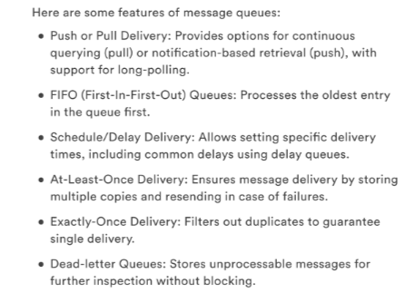
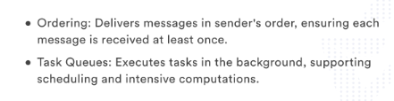
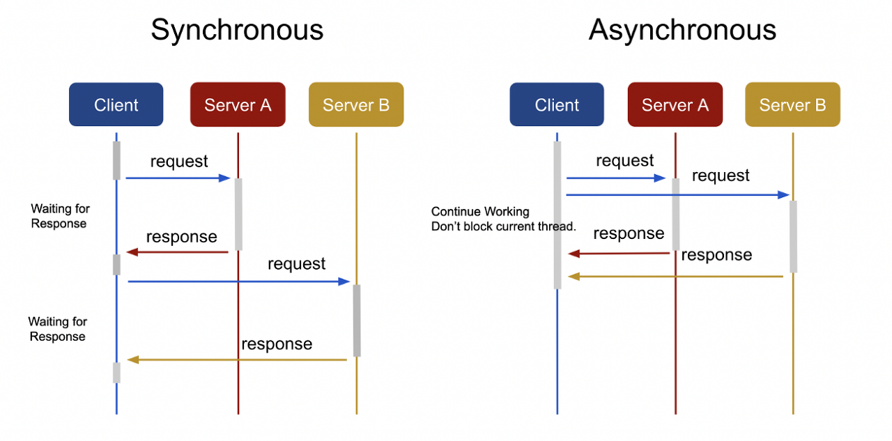
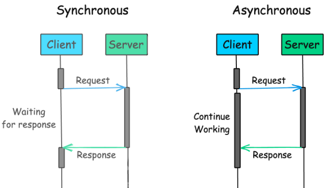
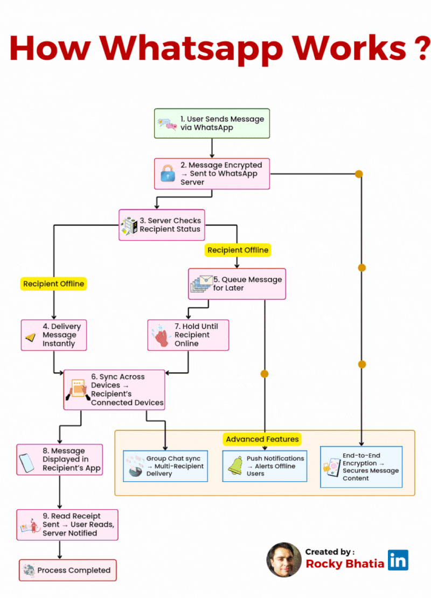

System Design Mastery
Master scalable systems with premium insights
📬 Message Queues
1️⃣ What is it?
A Message Queue is a system that enables asynchronous communication between producers and consumers.
- Producers send messages
- Messages are stored in a queue
- Consumers process messages asynchronously
📌 Flow
Send → Queue → Deliver → Retry if needed


2️⃣ Why Message Queues exist
Without a queue:
- Service A calls Service B
- If B is slow or down → A fails ❌
With a queue:
- A sends message to queue ✅
- Queue stores it safely
- B processes when ready
3️⃣ What breaks without it?
Without message queues:
- 🔴 User requests become slow
- 💥 One service failure breaks others
- ⚠️ Traffic spikes crash the system
- 🕒 Background tasks block main flow
📌 Example:
User places order → email + inventory + invoice all done synchronously → slow checkout ❌
4️⃣ Compare Sync vs Async

❌ Synchronous (no queue)
- Service A calls Service B
- A waits until B finishes
- If B is slow or down → A is blocked
✅ Asynchronous (with message queue)
- Service A sends message to queue
- A immediately continues
- If B is down → queue keeps message

5️⃣ When to use it / When NOT to use it
✅ When to use message queues:
- Tasks can be done later / Background jobs
- Email/SMS notifications
- Order processing
- Send email after signup
- Process order asynchronously
❌ When NOT to use it:
- You need immediate response / Real-time responses required
- Small, low-traffic apps
- 📌 Queues add delay — not for instant results.
6️⃣ One common mistake
🚨 Assuming messages are processed instantly
- Queues are asynchronous — messages may be delayed
- Systems must handle retries & duplicates
- 📌 Always design for at-least-once delivery.
7️⃣ Real App Connection
1️⃣ When you send a message
You type “Hi” and hit send.
What happens:
- Your phone sends the message to the WhatsApp server
- Server puts the message into a queue
Why?
- Millions of messages arrive at the same time
- Queue helps not to overload servers
Queue used for:
📦 Incoming messages
2️⃣ When the receiver is offline
Your friend’s phone is OFF 📵.
What happens:
- Message goes into a delivery queue
- Queue stores the message safely
- When your friend comes online → message delivered
👉 Without queue → message would be lost ❌
Queue used for:
📦 Offline message storage

8️⃣ Why not use it everywhere?
Message queues:
- Add complexity
- Increase latency
- Require monitoring
- Need retry & failure handling
👉 Use queues only when async processing is needed.
🎯 Summary
A message queue enables asynchronous communication between services, improving scalability, reliability, and fault tolerance by decoupling producers and consumers.
Pro tip
Popular Message Queue systems: RabbitMQ, Kafka, AWS SQS, ActiveMQ